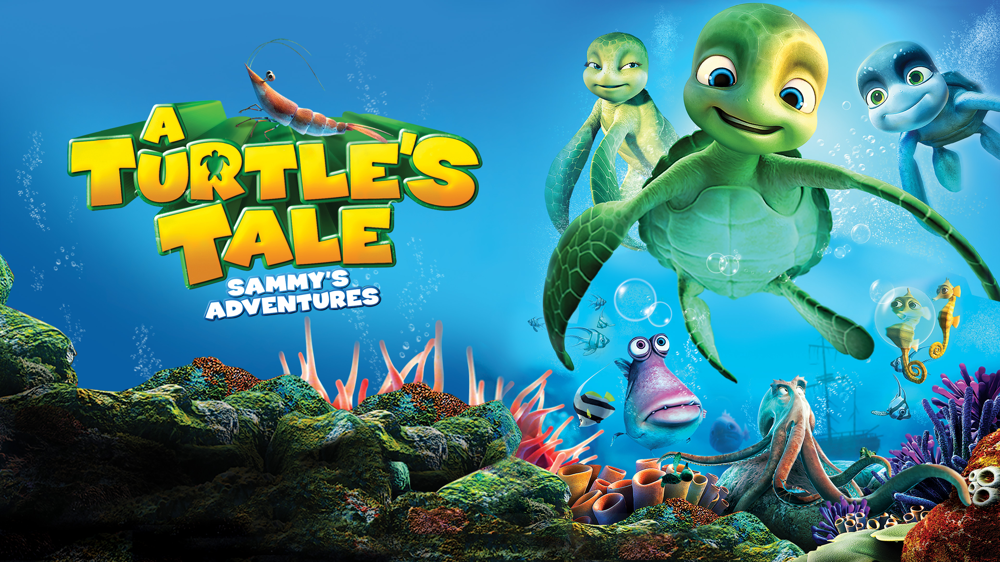
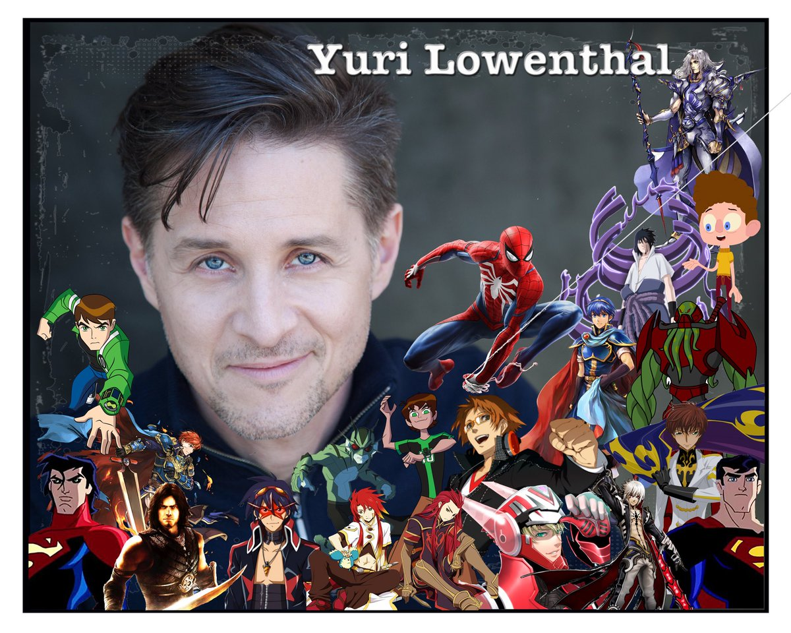

A TURTLE'S TALE

In 1959, Sammy, a Green sea turtle, hatches on a deserted beach and while trying to climb up a sand slope is caught by a seagull. He manages to escape along with another hatchling sea turtle named Shelly who was caught by another seagull. Sammy falls onto an old raft and gets carried into the Tasman sea, losing Shelly. Later he befriends a leatherback hatchling named Ray. The two friends grow up together. One day Ray shows Sammy his new found friend Slim the day octopus, but they are forced to take shelter from an oil spill, caused by an oil tanker shipwreck. After the raft collapses, Sammy and Ray are caught in trawler nets and separated. Hours later, Sammy is thrown back into the sea, but is saved by a dolphin. Sammy makes it to shore and the next day finds himself in an enclosure, taken in by human hippies and has the company of a British shorthair named Fluffy. Eventually Sammy shares the enclosure with a larger turtle named Vera, however Vera is released into sea as it seems the two are not mating. Not long after that, the unauthorized hippies are evicted by the police, leaving Sammy behind. Sammy returns to the ocean and is rejoined by Vera. On a search for food, Sammy and Vera rescue a female turtle, who turns out to be Shelly. Sammy and Shelly travel the oceans and ask around in search of the secret passage Sammy heard of. Finally the two turtles brave the dangers of the Panama Canal but separated as they try to pass a lock. Sammy follows her trail to the Antarctic, where is picked up by Ecologists and taken to California where he meets Fluffy once again. Soon after he is released back into the ocean, Sammy is requested by two leatherbacks to help a trapped turtle in a container. His rescuee is none other than his old friend Ray. With help from Ray's girlfriend Rita, Sammy explores a wrecked galleon and finds Shelly dating with another turtle. Rita reveals that turtle named Robbie is only a playboy. To win Shelly's heart, Ray enlists the help of the toothless shark Albert for Sammy to stage a rescue. Finally reunited with Shelly, the two turtles along with Ray and Rita return to their birthplace to make their own hatchlings. The movie ends as Sammy, now a new grandfather, helps his small grandson out of his nest and urges him to have his own journey.
| Title of Movie | The Actors | Age Restrictions | Show Times | QR code for Booking & payments |
|---|---|---|---|---|
| A TURTLE'S TALE | Melanie Griffith,Kathy Griffin,Tim Curry,Anthony Anderson,Stacy Keach | All Ages Welcome | 10:00 to 13:00 & 14:00 to 17:00 Daily |  |